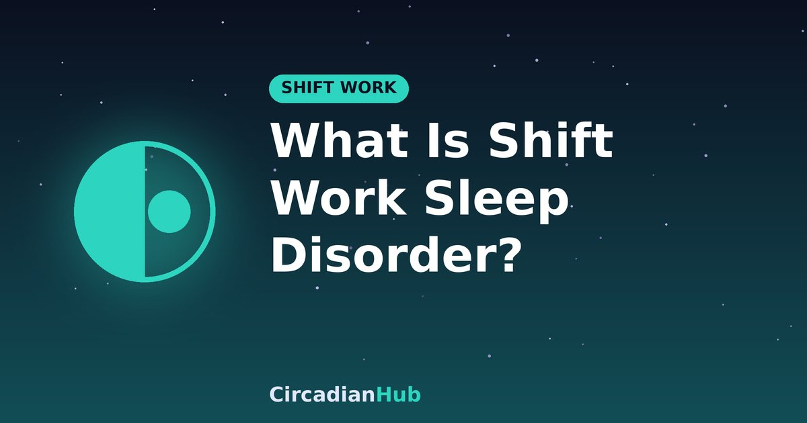

What Is Shift Work Sleep Disorder? Symptoms, Risks and Solutions

Almost everyone who works nights or rotating shifts feels tired sometimes. Shift work sleep disorder, often shortened to SWSD, is different: it is a recognised sleep-wake condition in which your work hours clash with your body clock so badly that sleep and daytime functioning suffer for months. This article explains what it is, how it is recognised, why it matters and what can help.
What is shift work sleep disorder?
SWSD is a circadian rhythm sleep-wake disorder. It appears in people who work outside the usual daytime hours, particularly night shifts, early morning shifts and rotating shifts. The core problem is insomnia, excessive sleepiness, or both, linked to the work schedule. Under the widely used International Classification of Sleep Disorders, the symptoms need to be present for at least three months and not better explained by another sleep disorder, a medical condition or medication.
How common is it?
Estimates vary depending on how it is defined and which workers are studied. Some studies suggest that around one in ten night and rotating shift workers meet the criteria, and many more have milder symptoms that stop short of a diagnosis. Being a "night owl", older age and family responsibilities can all affect how well someone copes.
Symptoms to look for
During the day and night
- Difficulty falling or staying asleep when you are scheduled to sleep.
- Sleeping much less than you need, often less than six hours.
- Feeling extremely sleepy at work, especially in the small hours.
- Trouble concentrating and slower reactions.
- Waking unrefreshed even after a full sleep window.
Wider effects
- Irritability, low mood or anxiety.
- Headaches and digestive problems.
- Reduced interest in social or family life.
- Falling asleep at the wheel or near misses on the drive home.
Why it happens
Your body clock expects you to be awake in daylight and asleep at night. Working nights means being active when your body wants rest and trying to sleep when it wants activity. Light exposure on the way home, noisy days, family demands and irregular rotas all make it harder to sleep and to adapt. Individual factors, such as a natural tendency to be a morning person, can make the mismatch worse.
Health and safety risks
The consequences go beyond feeling tired.
- Accidents: sleepiness increases errors at work and the risk of drowsy driving, particularly on the commute home.
- Mental health: long-term sleep disruption is linked to low mood and anxiety.
- Physical health: long-term night work is associated with digestive complaints and, in large studies, higher risks of metabolic and cardiovascular problems.
- Cancer classification: the International Agency for Research on Cancer has classified night shift work as probably carcinogenic, based on limited evidence in humans.
These are group-level findings and do not mean that any one person will develop these conditions. They are, however, good reasons to take persistent symptoms seriously.
How is it diagnosed?
A doctor or sleep specialist will ask about your schedule, your sleep and your symptoms, and will usually want to rule out other causes. Typical checks include:
- A sleep diary for one to two weeks, including work and rest days.
- Questions about caffeine, alcohol, medication and mental health.
- Screening for other sleep disorders, especially sleep apnoea and restless legs syndrome.
- Sometimes a wrist-worn activity monitor or a sleep study.
A useful start is your own sleep log. Note the time you went to bed, roughly when you fell asleep, when you woke and how you felt. Our rotating shift guide suggests keeping one.
Science-backed solutions
1. Plan your sleep like a shift
Give sleep a fixed window and protect it. Work backwards from your shift start and build sleep on whole 90-minute cycles; the Shift Work Sleep Calculator and our worked example show how. Consider a split pattern with a core sleep and a pre-shift nap.
2. Use light on purpose
Bright light during the early part of a night shift helps alertness, and wearing sunglasses on the commute home helps stop the morning light from resetting your clock towards day. Some specialists use timed bright-light therapy, using a light box under professional guidance.
3. Make the bedroom work in daytime
Darkness, coolness and quiet make the biggest difference. See our guide to sleeping during the day.
4. Strategic naps
A 90-minute nap before the shift or a 20-minute nap during a permitted break can reduce sleepiness. Give yourself time to wake up fully before driving or doing safety-critical work.
5. Caffeine, with limits
Caffeine can help you get through a shift, but use it early in the night and stop about six hours before your planned sleep.
6. Melatonin and medication
Some doctors recommend low-dose melatonin taken at a chosen time to help daytime sleep, and there are prescription medicines for excessive sleepiness in this condition. These need medical advice about timing, dose and suitability, and are not something to start on your own.
7. Treat other conditions
Sleep apnoea, insomnia, depression and anxiety are all common and treatable. Cognitive behavioural therapy for insomnia can be adapted for shift workers.
How SWSD differs from other sleep problems
Several conditions can look similar, and telling them apart matters because the treatments differ.
| Condition | Key feature |
|---|---|
| Shift work sleep disorder | Symptoms tied to work hours; improve when the schedule changes |
| Chronic insomnia | Trouble sleeping even when there is a suitable opportunity to sleep |
| Sleep apnoea | Loud snoring, pauses in breathing and unrefreshing sleep |
| Depression or anxiety | Low mood, worry or loss of interest, with disturbed sleep |
| Simple sleep deprivation | Sleepiness that resolves after a few good nights |
More than one can occur together. A doctor can help separate them, which is why a good sleep diary and honest description of your symptoms are so valuable.
A worked example
Imagine a nurse working 19:00 to 07:00 who sleeps for only four to five hours in the morning, feels exhausted through the night and dreads the drive home. A sleep diary shows she goes to bed at 09:30 after scrolling her phone, wakes at 13:30 to noise and never naps. With her doctor she makes a few changes. She wears sunglasses on the commute, blocks light in the bedroom, moves bedtime to 08:00, adds a 90-minute pre-shift nap, and stops caffeine after 02:00. After several weeks she sleeps about seven hours across the day and feels much more alert. This is an illustration, not a prescription; the best plan depends on the person, but it shows how several small changes can add up.
Living with shift work over the long term
Even without a diagnosis, some habits reduce the strain over months and years: regular physical activity, regular meals, time outdoors in daylight during your waking hours, regular health check-ups, and a firm commitment to sleep. Keep social connections, since isolation can worsen mood, and plan holidays and days off so that you actually recover. Consider whether a different pattern, such as permanent nights rather than rotating, or a different start time, might suit your body better, if your employer allows choice.
Supporting a partner or family member who works shifts
If someone you live with struggles, the most useful help is practical: protecting their sleep window, sharing household tasks, and noticing warning signs such as unusual irritability, drowsy driving or low mood. Encourage them to talk to a doctor if problems persist.
What employers and workers can do
- Forward-rotating rotas with at least 11 hours between shifts.
- Limits on consecutive night shifts and on overtime.
- Bright lighting during night shifts and quiet areas for breaks.
- Education about sleep and fatigue, and fatigue risk policies.
When to see a doctor
Seek advice if you have had sleep or sleepiness problems for several weeks or more, you have had a near miss while driving, you find yourself falling asleep at work, or you feel persistently low. Bring your rota and your sleep diary.
Frequently asked questions
Is SWSD the same as being tired after nights?
No. Tiredness is common and usually improves with rest. SWSD involves longer-lasting problems that affect sleep and daytime function.
Can it go away?
It often improves if you change to a daytime schedule, but many people improve with better sleep planning and treatment even while on shifts.
Should I quit night work?
That is a personal decision. Speak with your doctor and consider what changes to the rota or workplace might help first.
Are naps enough to fix it?
Naps help but do not replace consistent, adequate sleep.
Summary
- SWSD is insomnia and/or excessive sleepiness linked to work hours, lasting at least three months.
- It can raise the risk of accidents, poor mood and long-term health problems.
- Planned sleep, light control, naps, a good bedroom and medical support all help.
- See a doctor if symptoms persist, and never drive when drowsy.
Plan sleep around your shift with our Shift Work Sleep Calculator.
Sources and further reading
- NIGMS (NIH): Circadian Rhythms fact sheet
- CDC/NIOSH: How Shift Work and Long Work Hours Increase Health and Safety Risks
Last updated: 1 October 2026. Links are general background reading from public-health organisations. How we write and update our guides.
Medical disclaimer: This article is for general information only and is not medical advice. If you have persistent sleep problems or excessive daytime sleepiness, speak with a doctor or sleep specialist.